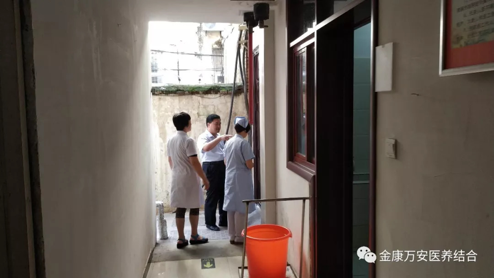
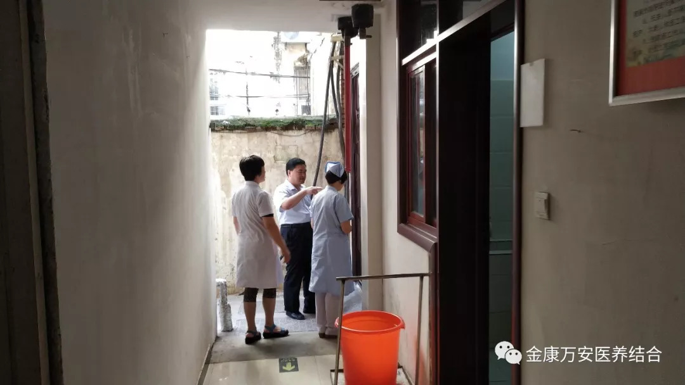

万安康复医院新闻
漯河万安康复医院、金康护理院开展医疗废物及污水处理专项督查
人气: "" 时间：2018-08-23
为进一步规范医疗废物、废水的处置管理，预防和控制医院感染，防止疾病传播，8月23日，院长王卫峰、业务院长张莉、刘洋、护理部主任赵黎光、李爱华等相关人员分别对漯河万安康复医院、漯河金康护理院两院医疗废物及污水污泥处理情况进行了现场督导检查。
 

在医疗废物暂存处，检查组仔细查看了各项记录，详细询问了具体工作流程和日常管理工作，并打开各类医疗废物贮物盖进行了核对。检查显示，工作人员能够执行医疗废物处置登记管理制度，做到正确分类收集医疗废物，交接记录齐全；医疗废物有明显警示标识，有严密的封闭安全措施；医院污水处理严格按照国家规定标准处理、排放，日常监测指标符合要求。检查中发现的问题现场督促相关人员整改。


督查结束后，王院长表示：一，对于医疗废物、废水要高度重视、规范处置，明确责任、认真履职，建章立制、规范运行，发现问题、立即整改；二，要严格按照医疗废物、废水管理规定，层层落实管理责任；三，各科室要充分认识到安全生产及医疗废物管理的重要性，切实履行好自己的职责，坚决杜绝医疗废物、废水对环境造成危害。